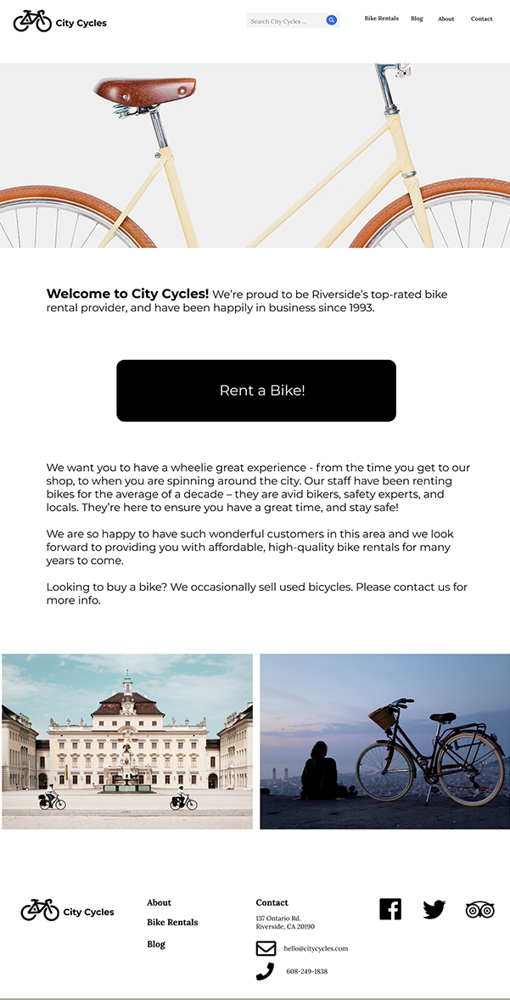
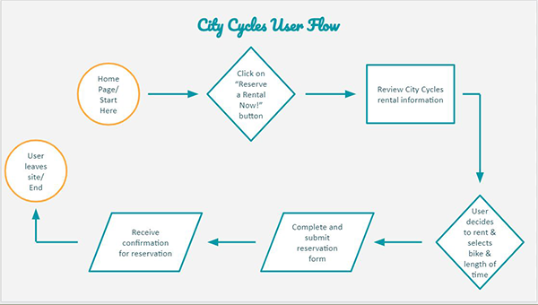
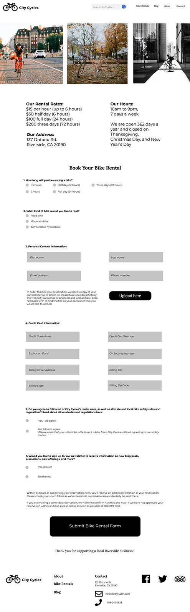
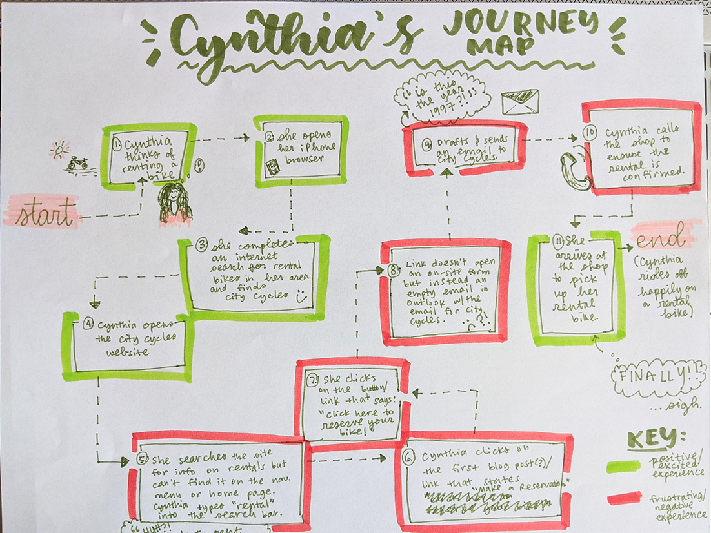

City Cycles (Concept Client) | UX Research and Design
Tools Used: Figma, InVision
Project Overview: City Cycles wanted to increase the number of users booking bicycle reservations through their existing website. Users preferred to book via phone or in-person, but City Cycles staff were overwhelmed by the volume. To solve user problems with the site, I conducted UX research to determine why users weren’t booking online and tested improvement recommendations.
Project Deliverables: UX Research Results and Takeaways, Website and Process Improvement Recommendations, Updated Website Design
Project Goals: The project goal for City Cycles was to determine how we might get more users to fully book their bike rental on the City Cycles website instead of calling or stopping in the shop.
Design Process: I followed the Design Thinking methodology and took the following research and design steps:
1. Empathize: I learned who the City Cycles users were and gained empathy for them by conducting user interviews and creating user empathy maps. I completed several other qualitative and quantitative data collection methods to better get to know who City Cycles users are, including heatmapping, SWOT analysis, competitive analysis, and using Google analytics data from the City Cycles website. I then used this data to develop several user personas and drew a user journey map to show the overall experience the user would have with the bike rental process from start to finish.
2. Define: After gaining empathy for City Cycles users and learning about City Cycles’ current site problems, I defined the problem statement and developed a hypothesis to test based on SMART goals.
3. Ideate: Using the problem statement and the developed user personas, I started brainstorming ideas for the updated site and online reservation process using the matrix method.
4. Prototype: To start this step, I selected an information architecture model for the site, updated the sitemap, and drew a user flow to ensure the proposed site structure updates would improve the users’ experience.
5. Test: After completing a fully clickable, high-fidelity digital prototype, I tested it on real users, collected feedback, analyzed the feedback, and then iterated on the design.
Final Homepage Design Comp
City Cycles User Flow Diagram
Final Rentals Page Design Comp
Drawn Journey Map for a User Persona, named Cynthia
Contact
Let's Work Together
I'm available for full-time, freelance, and contract visual design work.
Want to work together? Send me an email with the basic project details and I'll respond within a few business days.